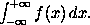
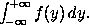

Suppose that we are producing a paper that makes frequent use of some mathematical expression. For example, suppose that integrals like
occur frequently throughout the text. This formula is obtained by typing
\[ \int_{-\infty}^{+\infty} f(x)\,dx.\]
It would be nice if we could type \inftyint (say)
to obtain the integral sign at the beginning. This can
be done using \newcommand. What we do is to place
a line with the command
\newcommand{\inftyint}{\int_{-\infty}^{+\infty}}
near the beginning of the input file (e.g., after
the \documentclass command but before the
\begin{document} command). Then we only have to
type
to obtain the above formula.\[ \inftyint f(x)\,dx.\]
We can modify this procedure slightly. Suppose that we
we defined a new control sequence \intwrtx by
putting the line
\newcommand{\intwrtx}[1]{\int_{-\infty}^{+\infty} #1 \,dx}
at the beginning of the input file. If we then type the line
\[ \intwrtx{f(x)}.\]
then we obtain
What has happened is that the expression in braces after
\intwrtx has been substituted in the expression
defining \intwrtx, replacing the #1 in that
expression.
The number 1 inside square brackets in the
\newcommand line defining \intwrtx indicates
to LaTeX that it is to expect one expression (in braces)
after \intwrtx to substitute for #1
in the definition of \intwrtx. If we defined a
control sequence \intwrt by
\newcommand{\intwrt}[2]{\int_{-\infty}^{+\infty} #2 \,d #1}
then it would expect two expressions to substitute in for
#1 and #2 in the definition of \intwrt.
Thus if we then type
\[ \intwrt{y}{f(y)}.\]
we obtain
